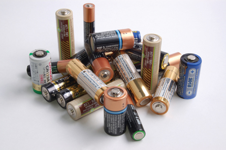

Module 4—Batteries and Balance
Lesson 1—Voltaic Cells and Batteries
 Get Focused
Get Focused

© Adam Majchrzak/shutterstock
The commercial “batteries” you use are made up of components involved in an electrochemical reaction. In Module 3 you learned about the scientific principles associated with electrochemical change. In this lesson you will begin to investigate how materials can be used to make model systems and commercial cells that allow for the study and use of the electron exchange that occurs between components.
You will start your investigation of electrochemical cells by looking at the most-used type of electric cell—the voltaic cell. By learning more about the voltaic cell, you might even be able to identify ways to improve this technology and its application.
Consider the following questions as you complete Lesson 1:
- How much do you rely on batteries in your everyday life?
- What are the components of a voltaic cell?
 Module 4: Lesson 1 Assignment
Module 4: Lesson 1 Assignment
There is no assignment for this lesson.
There are other questions in this lesson that are not marked by the teacher; however, you should still answer these questions. The Self-Check, Try This, and other types of questions are placed in this lesson to help you review important information and build key concepts that may be applied in future lessons. You should record the answers to all the questions in the lesson and place those answers in your course folder.
After a discussion with your teacher, you must decide what to do with the questions that are not part of your assignment. For example, you may decide to submit the responses to Try This and other questions that are not marked to your teacher for informal assessment and feedback. Your answers are very important to your teacher. They provide your teacher with information about your learning, and they help your teacher identify where adjustments to your instruction may be necessary.